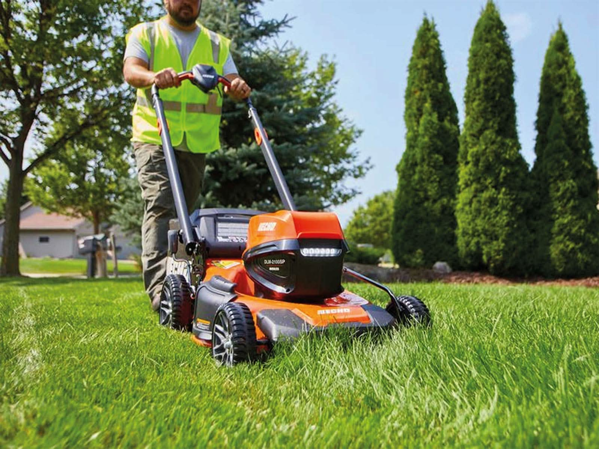
Servicio ideal para antejardines y patios de tamaño estándar. Incluye el corte uniforme, recolección de restos y limpieza.
Precio base: $15.000 CLP
*Sujeto a evaluación del terreno.

Servicio ideal para antejardines y patios de tamaño estándar. Incluye el corte uniforme, recolección de restos y limpieza.
Precio base: $15.000 CLP
*Sujeto a evaluación del terreno.
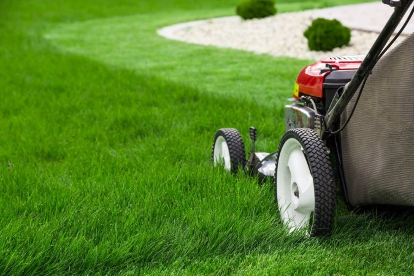
Acabado profesional con definición de bordes en muros, senderos y jardineras.
Precio base: $25.000 CLP
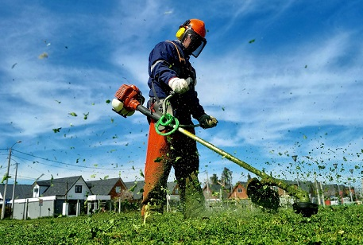
Desmalezado y corte con maquinaria de alta potencia para terrenos extensos.
Precio base: $45.000 CLP
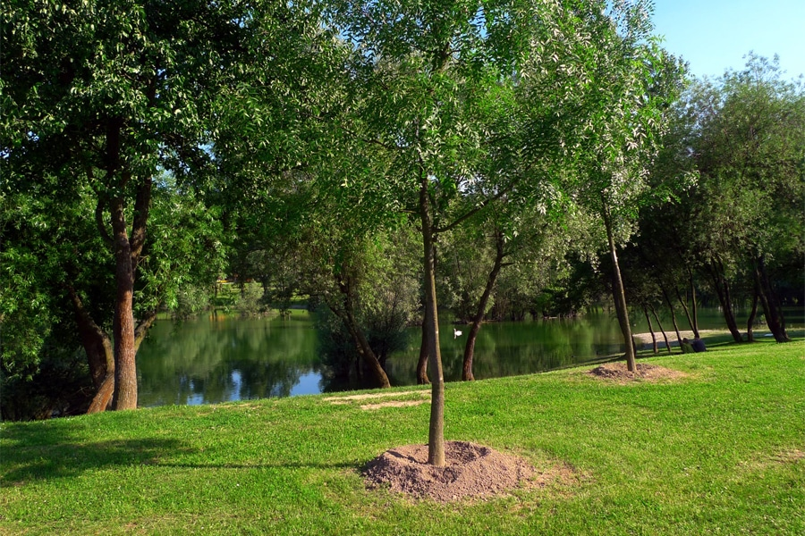
Guía estética y estructural para árboles jóvenes y arbustos.
Precio base: $20.000 CLP
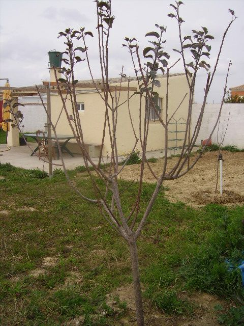
Retiro de ramas secas y enfermas para mejorar la salud del ejemplar.
Precio base: $35.000 CLP
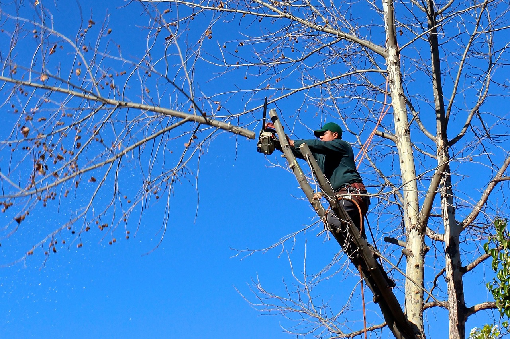
Servicio especializado con equipo de seguridad para ramas peligrosas en altura.
Precio base: $65.000 CLP
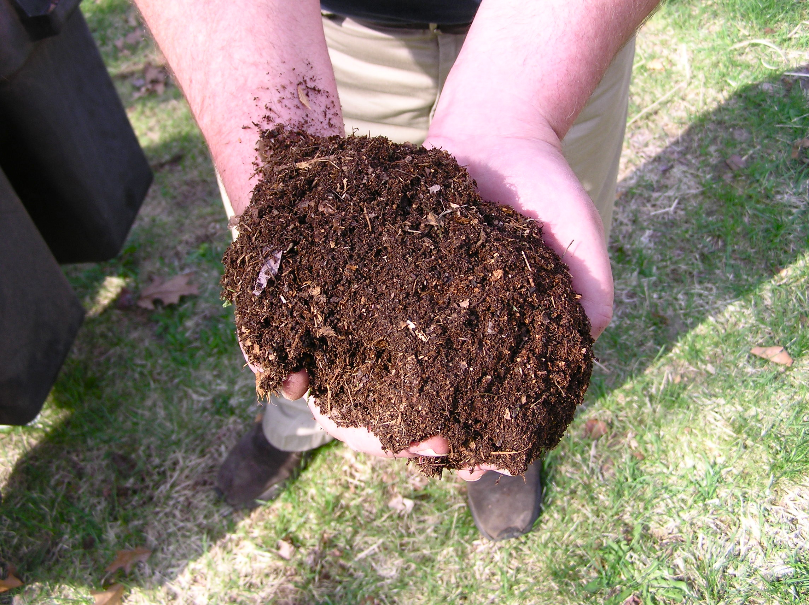
Mejora de suelo con compost y humus para nutrición a largo plazo.
Precio base: $18.000 CLP
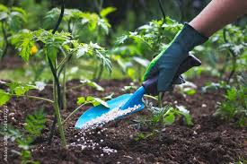
Nutrientes concentrados para potenciar el crecimiento rápido del césped.
Precio base: $25.000 CLP
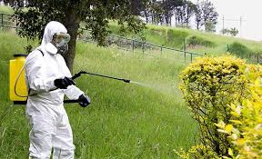
Plan de revitalización para áreas marchitas o dañadas por el clima.
Precio base: $40.000 CLP
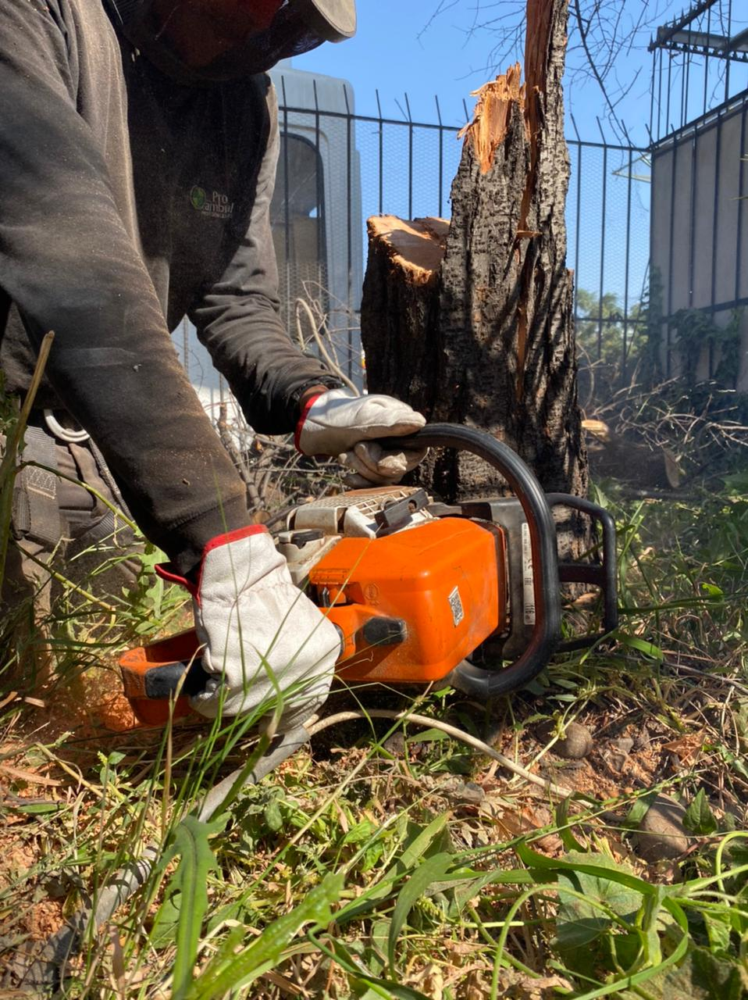
Remoción rápida de árboles de hasta 4 metros. Incluye trozado básico.
Precio base: $45.000 CLP
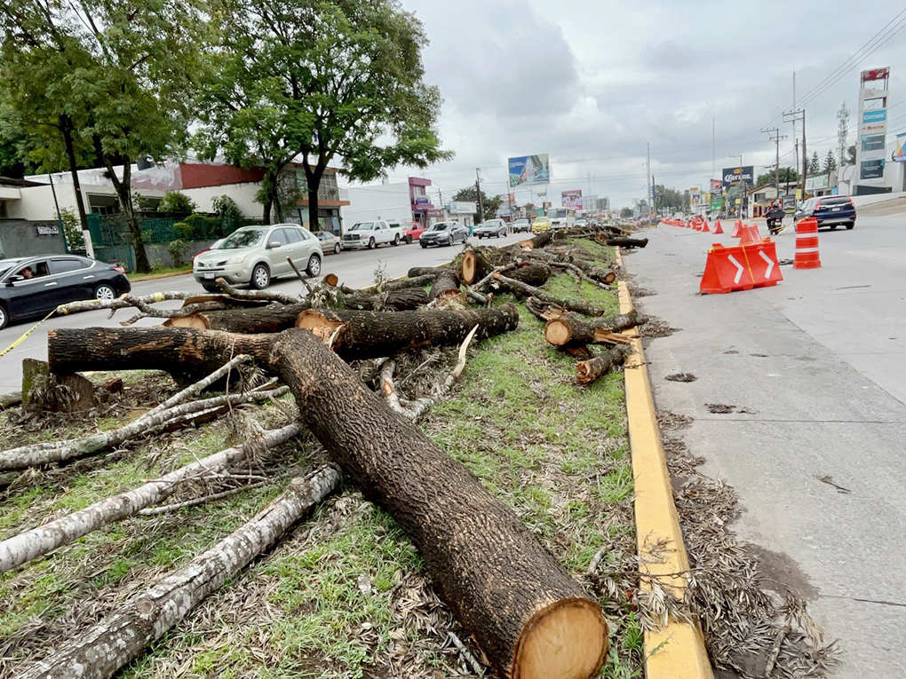
Derribo controlado para proteger infraestructura y entorno.
Precio base: $120.000 CLP
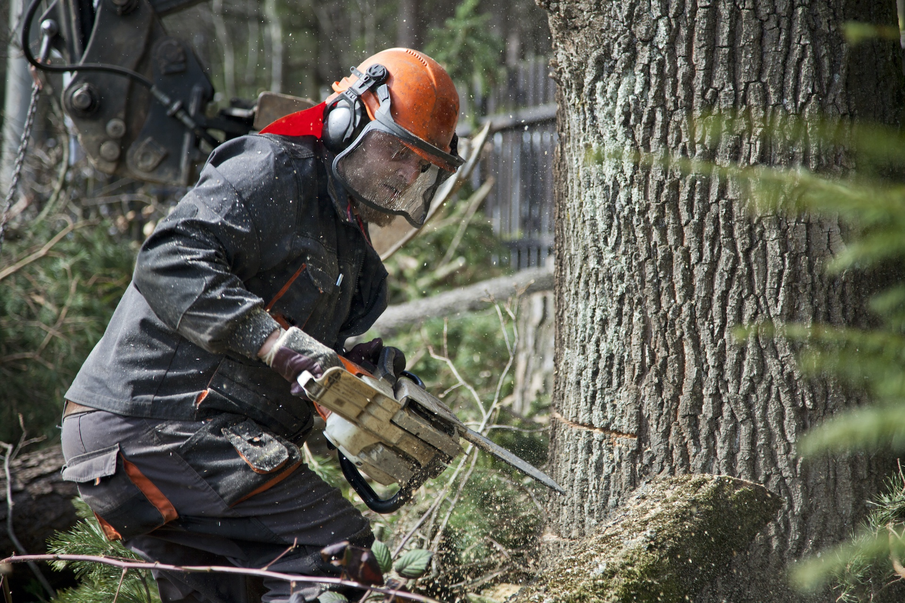
Desmontaje por secciones de árboles grandes con riesgo inminente.
Precio base: $250.000 CLP
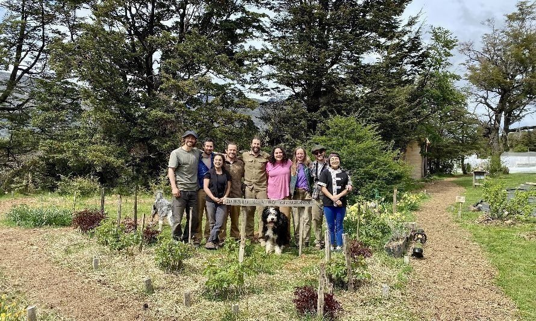
Comenzamos con una sola podadora y una gran pasión. Hoy somos referentes en Valdivia por nuestra honestidad y calidad profesional en cada jardín.
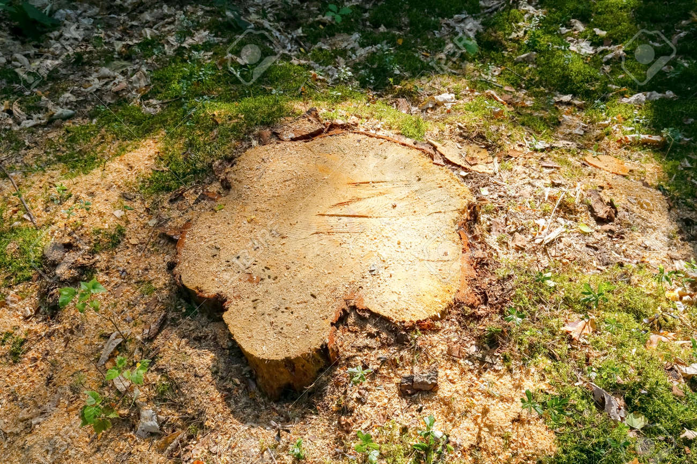
"Equipo profesional, trabajaron con seguridad y dejaron todo impecable."
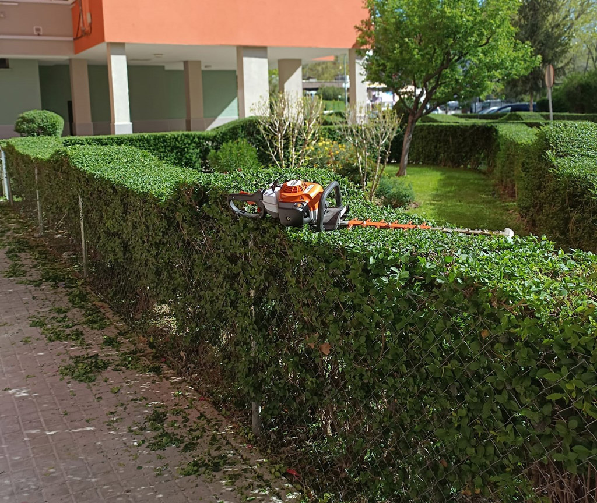
"Detallistas y puntuales. Mi jardín nunca se había visto tan verde."
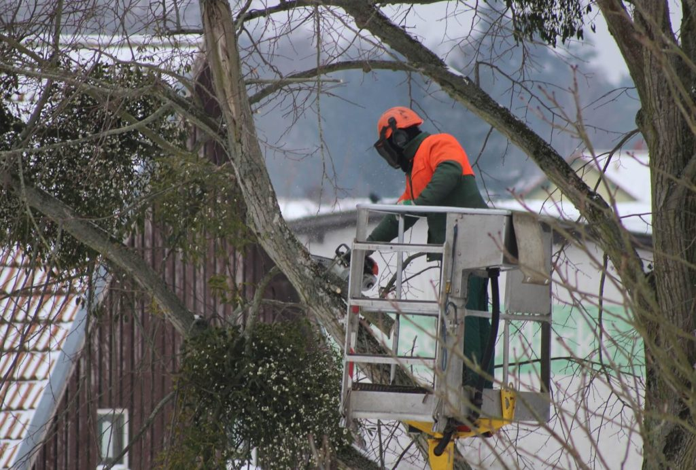
"Recomiendo 100%. Respetaron mi propiedad y el resultado fue espectacular."